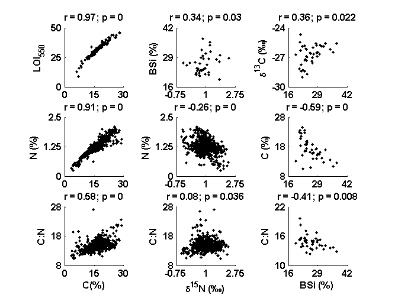

Contents
Fig_S1_script.m
Make Figure S1 from: Dunnette P.V., P.E. Higuera, K.K. McLauchlan, K.M. Derr, C.E. Briles, M.H. Keefe. 2014. Biogeochemical impacts of wildfires over four millennia in a Rocky Mountain subalpine watershed. New Phytologist Accepted.
Figure S1. Series-wide Spearman correlation coefficients (r) between selected biogeochemical variables from Chickaree Lake. P values generated with this script were adjusted (as needed) to account for temporal autocorrelation using the methods of Dawdy and Matalas (1964).
% The Dawdy and Matalas (1964) method is implemented in the function % corr_p_adj_N.m, also provided in the FigShare archive referenced below. % The script is not called upon here, because none of the p-values % differed, when rounded to two significant digits (as in the publication % Dunnette et al. 2014). % % Dawdy, D.R., and Matalas, N.C. 1964. Statistical and probability % analysis of hydrologic data, part III: Analysis of variance, covariance % and time series, in Ven Te Chow, ed., Handbook of applied hydrology, a % compendium of water resources technology: New York, McGraw-Hill Book % Company, p. 8.68-8.90. % % FILE REQUIREMENTS: % (1) CH10_biogeochemData.csv -- Biogeochemcial data from Chickaree Lk. % (2) CH10_LOI_Data.csv -- Loss on ignition and biogeochemical data % (3) CH10_BSiData.csv -- biogenic silica (BSi) and biogeochemical data % from Chickaree Lake. Biogeochemical data are averaged across samples % used for BSi measurements. % % DEPENDENCIES: % (1) corr.m -- Matlab function in the statistics toolbox % % CITATION, FILES, AND SELF-AUTHORED FUNCTIONS AVAILABLE FROM FigShare % Higuera, P.E. and P.V. Dunnette. 2014. Data, code, and % figures from Dunnette et al. 2014. figshare. % http://dx.doi.org/10.6084/m9.figshare.988687 % % Created by: P.V. Dunnette % Created on: January 2013 % Edited: 4/2014 for publication, by P.V. Dunnette % % University of Idaho, PaleoEcology and Fire Ecology Lab % http://www.uidaho.edu/cnr/paleoecologylab % phiguera@uidaho.edu clear all
Set working directories: directories where input data are located
%%%% IF ALL FILES ARE LOCATED IN THE SAME DIRECTORY AS THIS SCRIPT, CHANGE %%%% workdingDir to 'pwd' startDir = pwd; % Record starting path workingDir = 'L:\4_archivedData\Dunnette_et_al_2014\CH10_biogeochem\';
Load data and create variables
cd(workingDir) % Change to working directory data1 = csvread('CH10_biogeochemData.csv',1,3); data2 = csvread('CH10_LOI_Data.csv',1,6); data3 = csvread('CH10_BSiData.csv',1,0); cd(startDir)
Define variables from biogeochemData
N15 = data1(1:618,6); % N isotopic composition (d15N; o/oo) N = data1(1:618,7); % Percent (%) N C = data1(1:618,9); % Percent (%) C CN = data1(1:618,10); % C:N ratio (atomic)
Define variables from LOI_Data (biogeochemistry averaged over
%LOI550 samples) N2 = data2(1:121,4); % Percent (%) N C2 = data2(1:121,6); % Percent (%) C LOI550 = (data2(1:121,9))*100; % Loss on Ignition (% organic matter)
Define variables from BSiData (biogeochemistry averaged over BSi samples)
N153 = data3(1:40,6); % N isotopic composition (d15N; o/oo) C133 = data3(1:40,8); % Carbon isotopic composition (d13C; o/oo) C3 = data3(1:40,9); % Percent (%) C CN3 = data3(1:40,10); % C:N ratio (atomic) BSi = data3(1:40,5); % Percent (%) BSi
Create Figure
figure('Color',[1 1 1]); %%%% Spearman correlation between LOI550 and %C g = subplot(3,3,1); scatter(C2,LOI550,'.k') [RHO1,PVAL1] = corr(C2,LOI550,'type','spearman'); ylabel('LOI_5_5_0','fontsize',10,'FontWeight','b'); set(gca,'xTick',[0:15:30],'ytick',[0:25:50],'xlim',[0 30],'ylim',[0 50],... 'fontsize',10,'FontWeight','b'); axis square p=get(g,'position'); p(4)=p(4)-0.020; set(g,'position',p); title(['r = ' num2str(round(RHO1*100)/100)... '; p = ' num2str(round(PVAL1*1000)/1000)],... 'fontsize',10,'fontweight','b') %%%% Spearman correlation between d15N and %BSi g = subplot(3,3,2); scatter(N153,BSi,'.k'); [RHO2,PVAL2] = corr(BSi,N153,'type','spearman'); ylabel('BSi (%)','fontsize',10,'FontWeight','b'); set(gca,'xTick',[-0.75:1.75:2.75],'yTick',[16:13:42],... 'xlim',[-0.75 2.75],'ylim',[16 42],'fontsize',10,'FontWeight','b'); axis square p = get(g,'position'); p(4) = p(4)-0.020; set(g,'position',p); title(['r = ' num2str(round(RHO2*100)/100)... '; p = ' num2str(round(PVAL2*1000)/1000)],... 'fontsize',10,'fontweight','b') %%%% Spearman correlation between %BSi and d13C g = subplot(3,3,3); scatter(BSi,C133,'.k'); [RHO3,PVAL3] = corr(C133,BSi,'type','spearman'); ylabel(['\delta^1^3C (' char(8240) ')'],'fontsize',10,'FontWeight','b'); set(gca,'xTick',[16:13:42], 'yTick',[-30:3:-24],'xlim',[16 42],... 'ylim',[-30 -24],'fontsize',10,'FontWeight','b'); axis square p=get(g,'position'); p(4) = p(4)-0.020; set(g,'position',p); title(['r = ' num2str(round(RHO3*100)/100)... '; p = ' num2str(round(PVAL3*1000)/1000)],... 'fontsize',10,'fontweight','b') %%%% Spearman correlation between %C and %N g = subplot(3,3,4); scatter(C,N, '.k'); [RHO4,PVAL4] = corr(C,N,'type','spearman'); ylabel('N (%)','fontsize',10,'FontWeight','b'); set(gca,'xTick',[0:15:30],'yTick',[0:1.25:2.5],'xlim',[0 30],... 'ylim',[0 2.5],'fontsize',10,'FontWeight','b'); axis square p = get(g,'position'); p(4) = p(4)-0.020; set(g,'position',p); title(['r = ' num2str(round(RHO4*100)/100)... '; p = ' num2str(round(PVAL4*1000)/1000)],... 'fontsize',10,'fontweight','b'); %%%% Spearman correlation between d15N and %N g = subplot(3,3,5); scatter(N15,N,'.k'); [RHO5,PVAL5] = corr(N,N15,'type','spearman'); ylabel('N (%)','fontsize',10,'FontWeight','b'); set(gca,'xTick',[-0.75:1.75:2.75],'yTick',[0:1.25:2.5],... 'xlim',[-0.75 2.75],'ylim',[0 2.5],'fontsize',10,'FontWeight','b'); axis square p = get(g,'position'); p(4) = p(4)-0.02; set(g,'position',p); title(['r = ' num2str(round(RHO5*100)/100)... '; p = ' num2str(round(PVAL5*1000)/1000)],... 'fontsize',10,'fontweight','b'); %%%% Spearman correlation between %BSi and %C g = subplot(3,3,6); scatter(BSi,C3,'.k'); [RHO6,PVAL6] = corr(C3,BSi,'type','spearman'); ylabel('C (%)','fontsize',10,'FontWeight','b'); set(gca,'xTick',[16:13:42],'yTick',[8:10:28]','xlim',[16 42],... 'ylim',[8 28],'fontsize',10,'FontWeight','b'); axis square p=get(g,'position'); p(4) = p(4)-0.020; set(g,'position',p); title(['r = ' num2str(round(RHO6*100)/100)... '; p = ' num2str(round(PVAL6*1000)/1000)],... 'fontsize',10,'fontweight','b'); %%%% Spearman correlation between %C and C:N g = subplot(3,3,7); scatter(C,CN,'.k'); [RHO7,PVAL7] = corr(C,CN,'type','spearman'); ylabel('C:N','fontsize',10,'FontWeight','b'); xlabel('C(%)','fontsize',10,'FontWeight','b'); set(gca,'xTick',[0:15:30],'yTick',[8:10:28],'xlim',[0 30],... 'ylim',[8 28],'fontsize',10,'FontWeight','b'); axis square p = get(g,'position'); p(4) = p(4)-0.020; set(g,'position',p); title(['r = ' num2str(round(RHO7*100)/100)... '; p = ' num2str(round(PVAL7*1000)/1000)],... 'fontsize',10,'fontweight','b'); %%%% Spearman correlation between d15N and C:N g = subplot(3,3,8); scatter(N15,CN,'.k'); [RHO8,PVAL8] = corr(CN,N15,'type','spearman'); ylabel('C:N','fontsize',10,'FontWeight','b'); xlabel(['\delta^1^5N (' char(8240) ')'],'fontsize',10,'FontWeight','b'); set(gca,'xTick',[-0.75:1.75:2.75],'yTick',[8:10:28],... 'xlim',[-0.75 2.75],'ylim',[8 28],'fontsize',10,'FontWeight','b'); axis square p = get(g,'position'); p(4) = p(4)-0.02; set(g,'position',p); title(['r = ' num2str(round(RHO8*100)/100)... '; p = ' num2str(round(PVAL8*1000)/1000)],... 'fontsize',10,'fontweight','b'); %%%% Spearman correlation between %BSi and C:N g = subplot(3,3,9); scatter(BSi,CN3,'.k'); [RHO9,PVAL9] = corr(BSi,CN3,'type','spearman'); ylabel('C:N','fontsize',10,'FontWeight','b'); xlabel('BSi (%)','fontsize',10,'FontWeight','b'); set(gca,'xTick',[16:13:42],'yTick',[10:6:28],'xlim',[16 42],... 'ylim',[10 22],'fontsize',10,'FontWeight','b'); axis square p = get(g,'position'); p(4) = p(4)-0.020; set(g,'position',p); title(['r = ' num2str(round(RHO9*100)/100)... '; p = ' num2str(round(PVAL9*1000)/1000)],... 'fontsize',10,'fontweight','b');